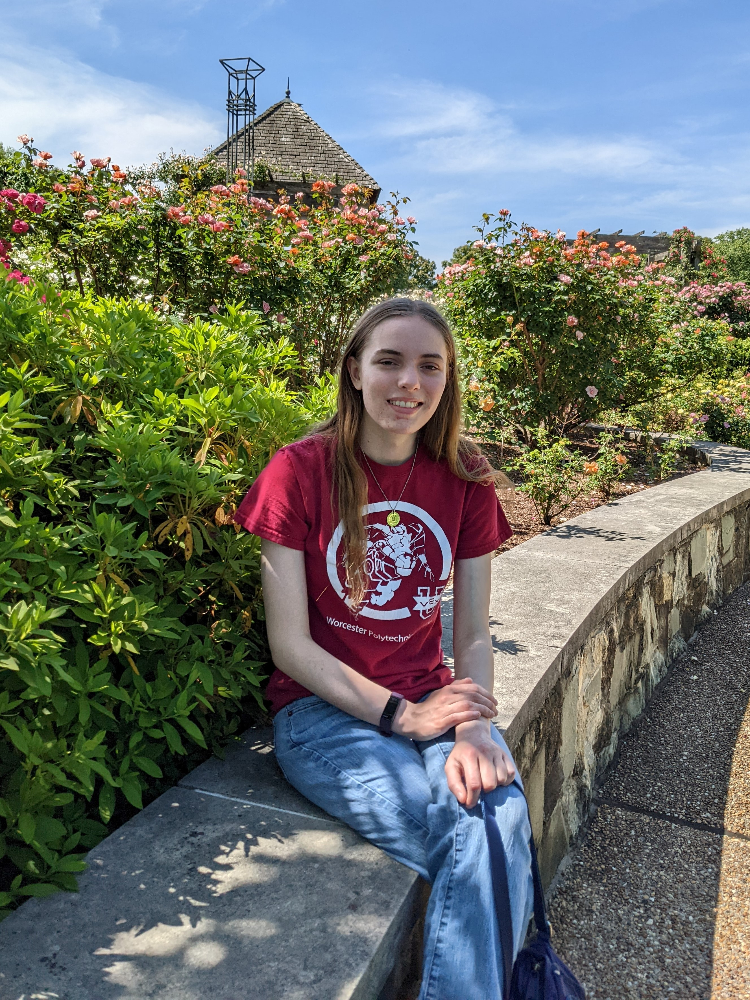

About Me

Hello! My name is Margaret and I'm from Richmond, VA. I am in my fourth and final year in Worcester Polytechnic Institute's Computer Science BS/MS program. In my free time, I help with a college robotics team and perform in a co-ed a capella group, the WPI Audiophiles. I also make small programming projects that you can find on the Projects page of this website.
Over the course of college, I have taken many Computer Science courses that have improved my knowledge and programming abilities. My most relevant courses are listed on the Academics page of this website. I have also completed two software engineering internships. Next summer, I will be returning to the company I most recently interned at, Toast, as a full time software engineer.
Over the course of college, I have taken many Computer Science courses that have improved my knowledge and programming abilities. My most relevant courses are listed on the Academics page of this website. I have also completed two software engineering internships. Next summer, I will be returning to the company I most recently interned at, Toast, as a full time software engineer.